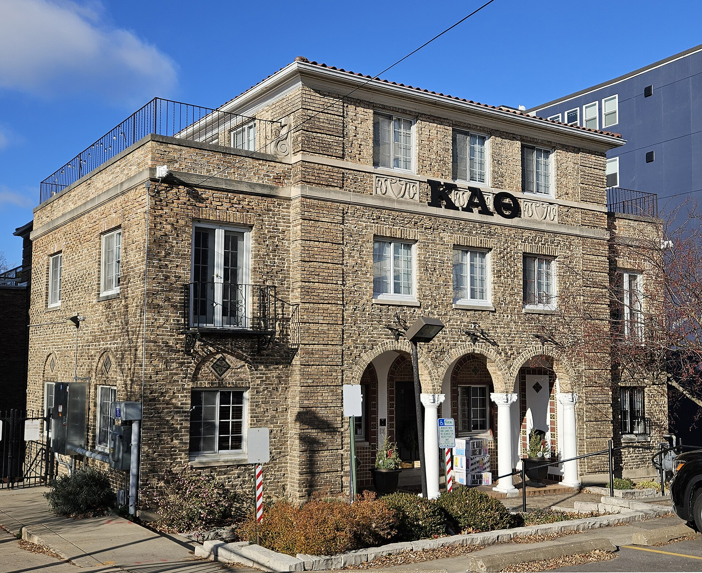
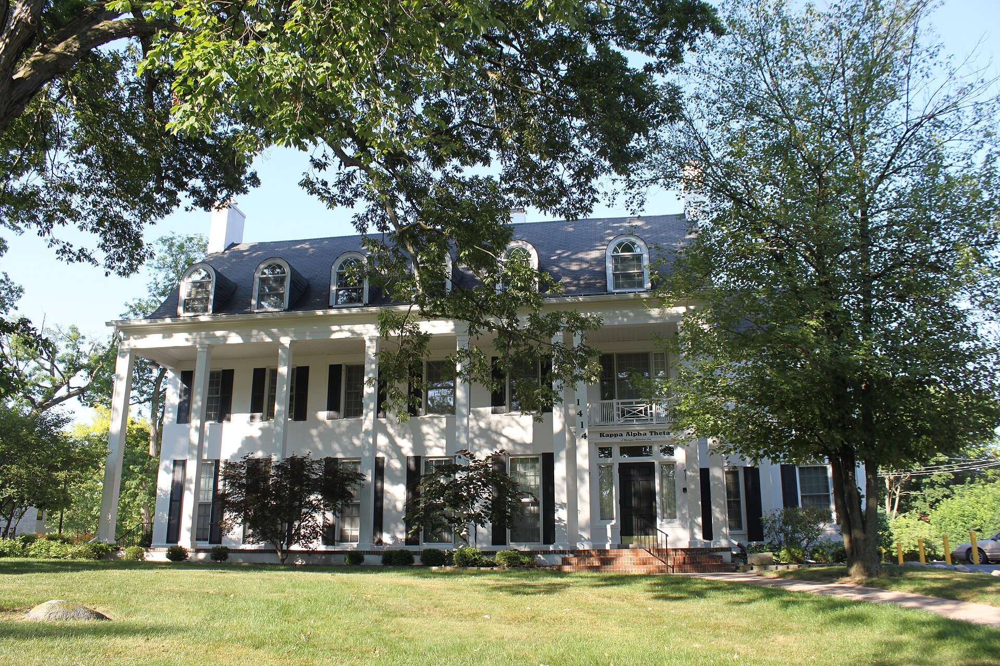
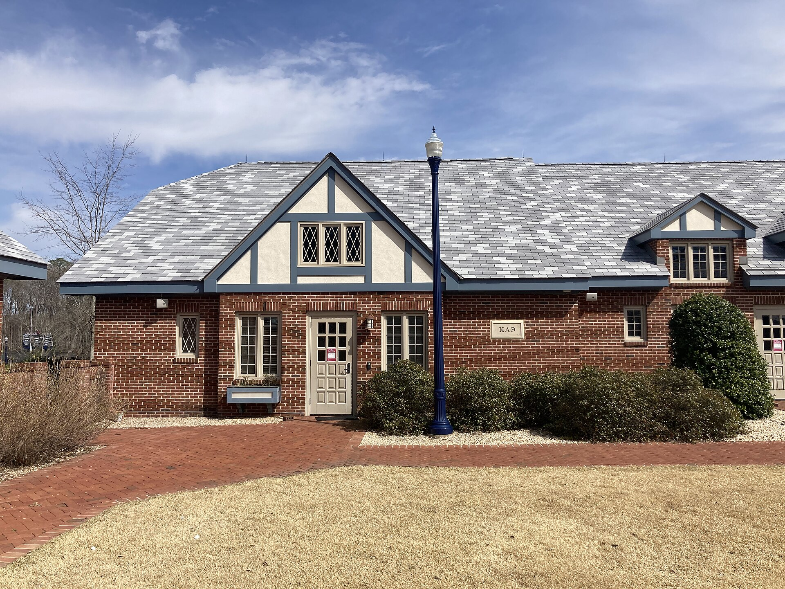
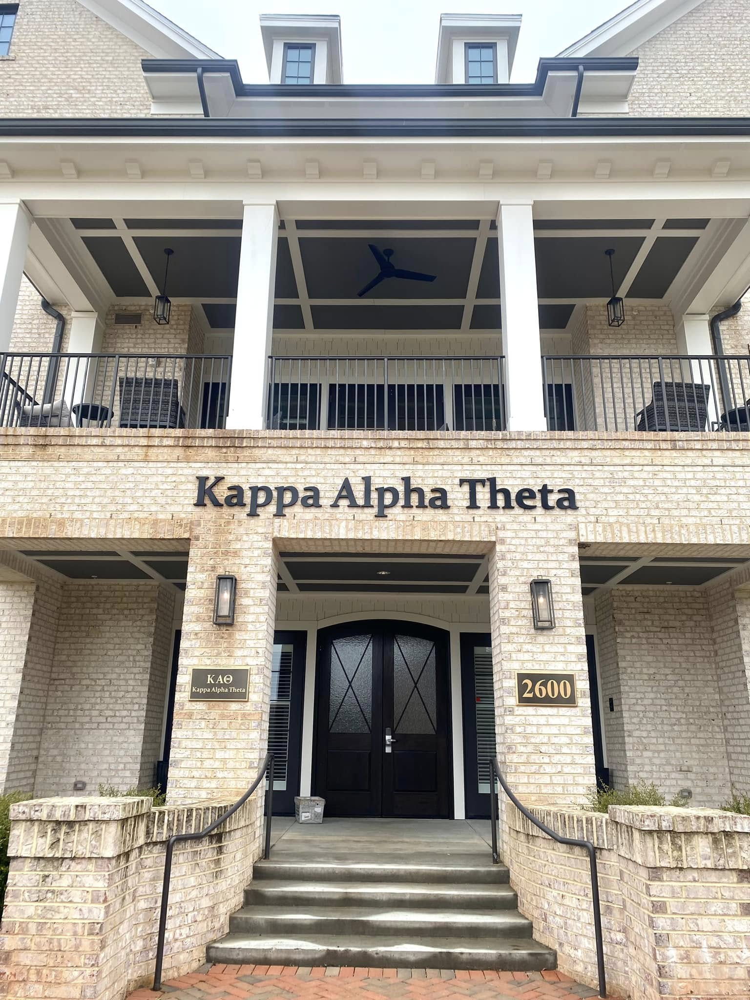
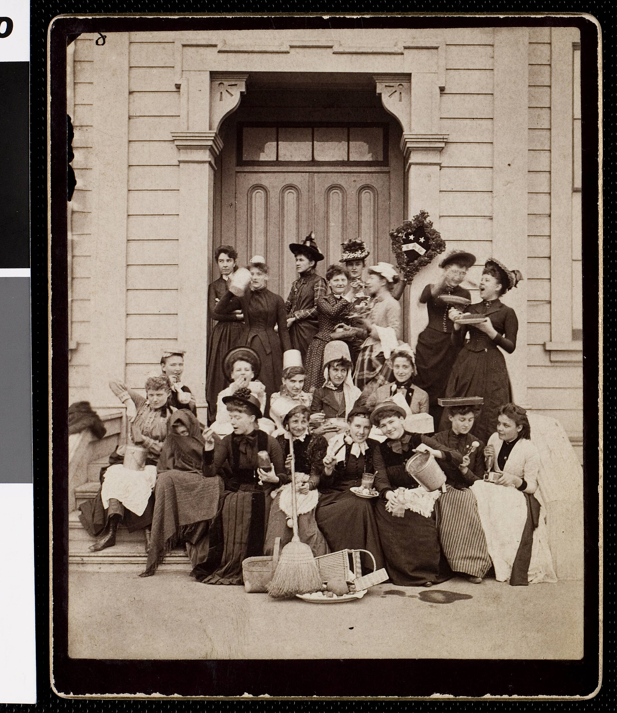

Tradition
Sisterhood Retreats
Annual getaways that strengthen bonds and welcome new members into the fold.
The friendships, traditions, and shared purpose that turn a group of students into a sisterhood that lasts a lifetime.
From the first day of recruitment to reunions decades later, sisterhood is the thread that connects every member of Eta Omega.

Annual getaways that strengthen bonds and welcome new members into the fold.

From flag football to sand volleyball, sisters compete and cheer together year-round.

Black & Gold formals, date nights, and chapter celebrations all year.

Late-night study sessions, movie nights, and the daily moments that build family.

Side by side at CASA events and community projects across St. Louis.

Mentorship that pairs new members with sisters who guide their journey.
The first fraternity for women — founded so that women might have the widest influence for good.The vision of our four founders, 1870
A snapshot of our chapter leadership. Replace with real photos, names, majors, and roles.
Member Name
President
Member Name
VP Administration
Member Name
VP Communications
Member Name
Treasurer
Recruitment is open to all women of Saint Louis University. Come see what sisterhood means at Eta Omega.